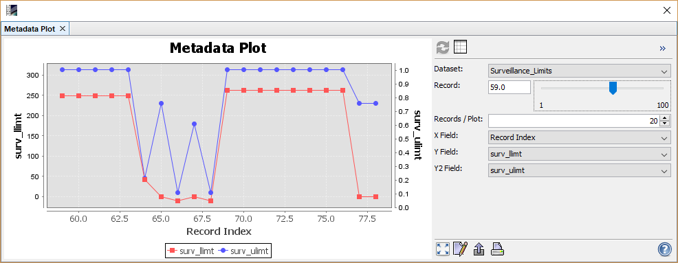

Metadata Plot Display
This dialog allows the user to plot metadata values. See screen shot below for an example.

This plot can be used to plot fields of metadata dataset against each other. The fields must be either scalar values
or arrays. If there are multiple records available for a metadata dataset the field can be plotted across all records.
A right-click on the diagram will bring up a context menu with some additional options.
Options Panel
The options panel on the right offers some configuration options. Note that the metadata plot will only show a graph
if x-axis and at least the first y-axis are well configured.
Header
- Refresh View

In case of the metadata view this will always be disabled.
- Table View

Shows the data of the plot in a tabular view. From there, you are able to switch back to
the metadata plot view.
- Collapse/Expand Options Panel
 /
/ 
Collapses or expands the options panel.
Center
- Dataset
Select the metadata element used as dataset for the plot. From this dataset the fields for
the X- and Y-axis can be chosen.
- Record
Select the current record, if any. If multiple records are shown in a single plot this defines the first plot.
- Records/Plot
Define how many records are shown in the plot. If start record index + num records is greater
than the maximum available records, then only the records till the last one record are shown.
- X Field
Allows to select the field of the dataset to be set a x-axis value provider.
The two following fields have a special meaning.
- Record Index
Will display the Y fields across the records depending on the settings
- Array Field Index [n]
If an array is selected for the Y field, then the array indices are used as x-values.
- Y Field
Selects the field to be plotted as first range axis.
- Y2 Field
Selects the field to be plotted as second range axis.
Footer
- Zoom all

Adjusts both axes to the full data range.
The 'Auto range' entry in the context menu can also be used.
- Edit Properties

Allows editing several properties (colors, axes, etc.) of the diagram.
The 'Properties...' entry in the context menu can also be used.
- Save chart as image

Saves the diagram as image (PNG).
The 'Save as...' entry in the context menu can also be used.
- Print chart

Prints the diagram.
The 'Print...' entry in the context menu can also be used.
- Help

Displays this page.
Context Menu
A click with the right mouse button on the diagram opens a context menu
which consists of the following menu items:
- Properties...
Allows editing several properties (colors, axes, etc.) of the diagram.
The on the right 'Plot' panel can also be used.
- Copy
Copies the diagram as image into the clipboard.
- Save As...
Saves the diagram as image (PNG).
The on the right 'Plot' panel can also be used.
- Print...
Print the diagram.
The on the right 'Plot' panel can also be used.
- Zoom In
- Both Axes - Zoom in on both axes.
Zooming can also be achieved by drawing a rectangle by clicking at the top left corner of the desired
zooming area, dragging the mouse to the bottom right corner, and releasing. Note that this won't work
when
'Select Mask 'histogram_plot_area'' is selected.
- Domain Axes - Zoom in only on the domain axis.
- Range Axes - Zoom in only on the range axis.
- Zoom Out
- Both Axes - Zoom out on both axes.
- Domain Axes - Zoom out only on the domain axis.
- Range Axes - Zoom out only on the range axis.
- Auto Range
- Both Axes - Adjusts both axes to the full data range.
The on the right 'Plot' panel can also be used.
- Domain Axes - Adjusts the domain axis to the full data range.
- Range Axes - Adjusts the range axis to the full data range.
- Copy Data to Clipboard
This will copy the diagram data as tabulated text to the system clipboard.
The copied text can then be pasted directly into a spreadsheet application
(e.g. Microsoft® Excel).